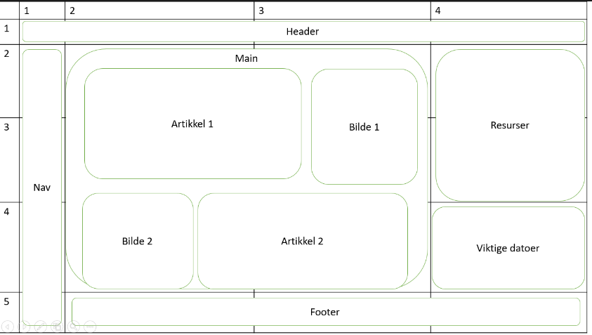

Om siden
Dette er er side laget av Jaran Martinsen. Student ved Høyskolen i Østfold, avdeling Halden. Denne siden er en del av Webutviklingskurset.
Skisse laget i MS Powerpoint
Før siden ble kodet i HTML5 og CSS, skisset jeg opp siden i MS Powerpoint, for å tegne opp siden sånn jeg ønsker den skal bli når den er ferdig. Jeg har plasert en 'Header' på toppen, med overskrift. Jeg ønsker å ha en navigasjons bar på venstre kant, og tre kollonner med artikkler (etter å ha laget siden i HTML fant jeg ut at det så best ut med bare to kollonner, så da ble det sånn). Og underst vil jeg ha en 'Footer', som linker til en egen side (denne).